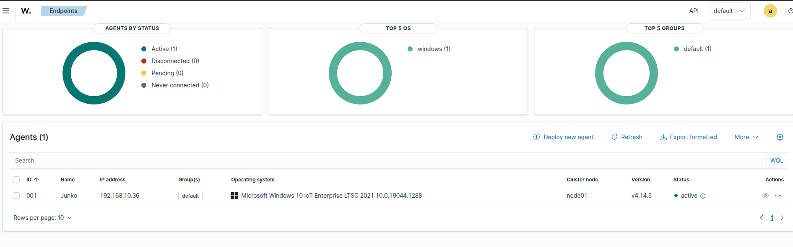
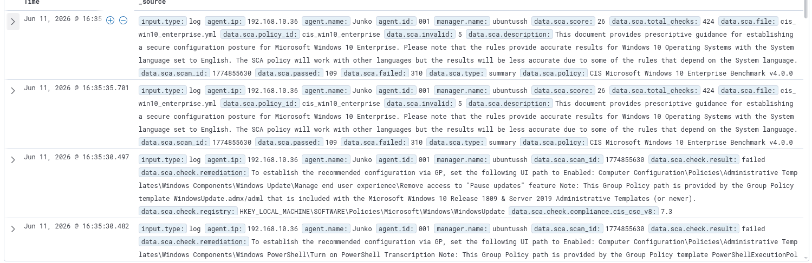
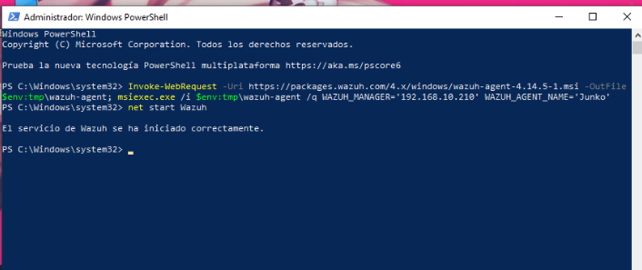

En esta cuarta entrada de la serie Bluebox se documenta la incorporación del primer agente al SIEM Wazuh: una máquina virtual con Windows 10 LTSC. A partir de este momento, todos los eventos de seguridad del sistema operativo Windows se centralizan en el dashboard de Wazuh para su monitorización en tiempo real.
1. Creación de la VM Windows 10
Se creó una nueva máquina virtual en Proxmox con los siguientes recursos:
| Recurso | Asignado |
|---|---|
| RAM | 4 GB |
| CPU | 2 núcleos |
| Disco | 40 GB |
| SO | Windows 10 LTSC |
Se utilizó una ISO de Windows 10 LTSC como fuente de instalación. Durante el proceso de creación de la VM, se añadieron los controladores VirtIO para optimizar el rendimiento de los dispositivos virtualizados (red, almacenamiento y memoria).

2. Instalación del agente Wazuh
Una vez instalado y configurado Windows 10, se accedió al dashboard de Wazuh y se navegó a Agents > Deploy new agent. Seleccionando la plataforma Windows, el dashboard genera un comando personalizado con la IP del servidor Wazuh y la clave de autenticación del agente.
El comando generado se ejecutó en PowerShell como Administrador dentro de la VM Windows:
wazuh-agent --install --server 192.168.10.210 --agent-name Junko
La única dificultad durante este paso fue localizar el comando exacto generado por el dashboard, ya que la ruta para obtenerlo no es inmediatamente obvia. Una vez ejecutado, el agente inició la comunicación con el servidor Wazuh y apareció en la lista de agentes del dashboard.
3. Verificación en el dashboard
Tras la instalación, el agente — nombrado Junko — apareció en el dashboard con estado activo (indicador verde), confirmando la conectividad correcta con el servidor Wazuh.

Los primeros eventos de seguridad comenzaron a llegar inmediatamente. Entre ellos, destacó un análisis de configuración (SCA) basado en el benchmark CIS Microsoft Windows 10 Enterprise Benchmark v4.0.0, que reveló una puntuación de cumplimiento del 26% (109 checks pasados, 310 fallados, 5 inválidos de un total de 424). El evento fue catalogado con nivel de severidad 9.
Alerta SCA registrada
4. Resumen de configuración final
- Servidor Wazuh: Ubuntu Server 24.04 LTS —
192.168.10.210 - Agente: Junko — Windows 10 LTSC —
192.168.10.36 - Estado del agente: Activo (verde)
- Recursos VM: 4 GB RAM / 2 CPU / 40 GB disco
- Primera alerta: SCA CIS Windows 10 — Score 26% (severidad 9)
- Eventos: Recibiendo en tiempo real en el dashboard
La incorporación del agente se completó el 11/06/2026 en un intervalo de 16:05 a 16:37. El proceso fue ágil gracias a la experiencia acumulada en misiones anteriores; la única fricción fue localizar el comando de despliegue en la interfaz del dashboard.